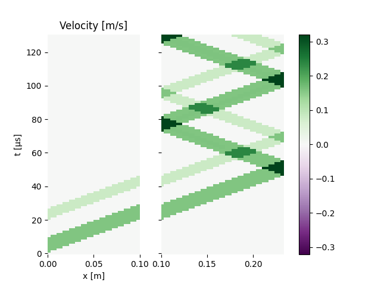
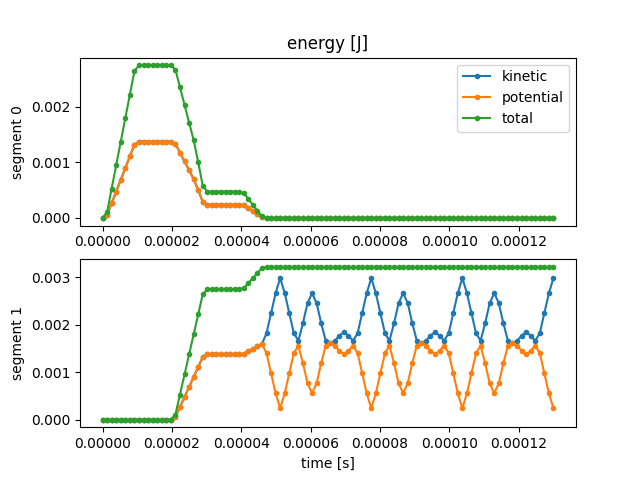
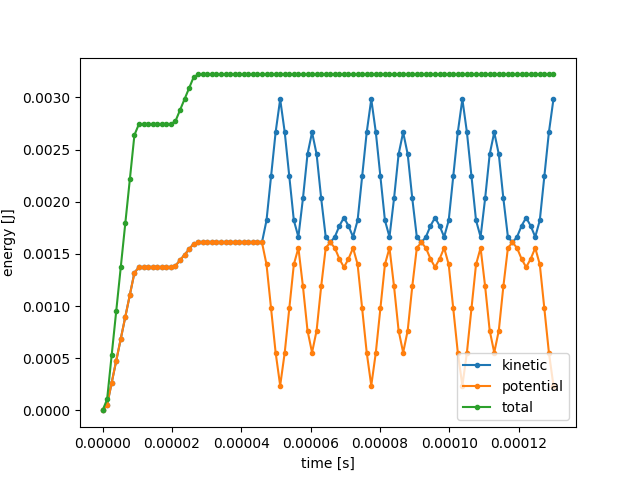
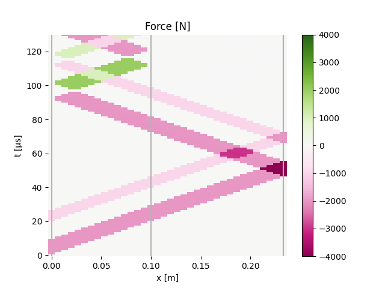
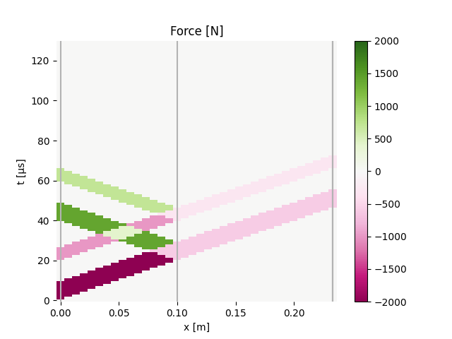
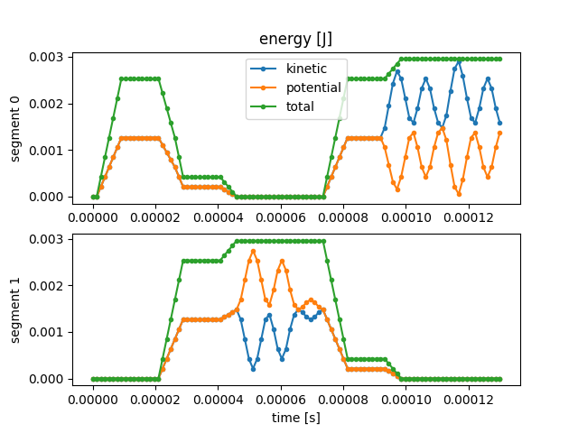
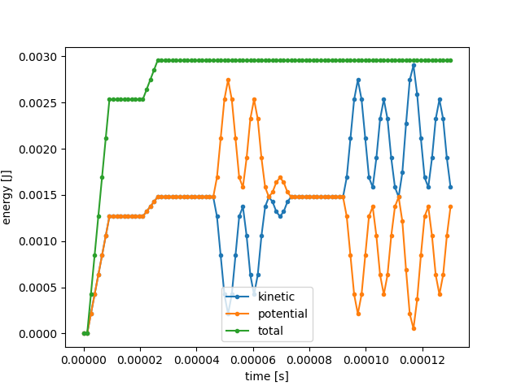
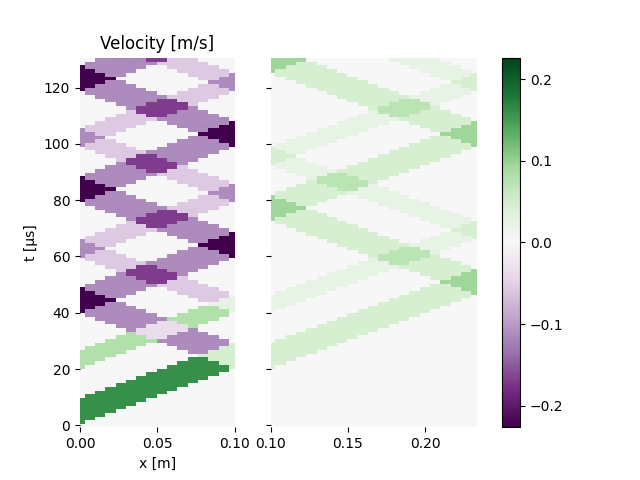
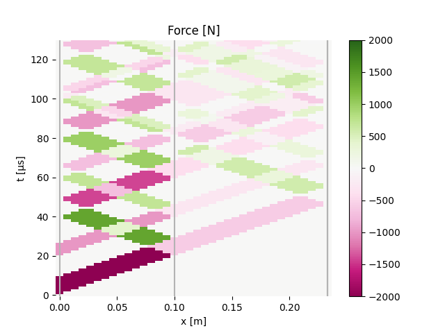

Note
Click here to download the full example code
Test WP2 class
Define a BarSet bar configuration and use it with WP2 to compute
elastic wave propagation in simple test cases.
import numpy as np
import matplotlib.pyplot as plt
from elwaspatid import WP2, BarSet
Define a few parameters
E = 201e9 # Young modulus [Pa]
rho = 7800 # Density [kg/m3]
d = 0.020 # diameter [m]
k = 2.4 # diameters ratio [-]
Create the bar configurations: two bars in contact.
nm = 15
bc = BarSet([E, E], [rho, rho], [.1, .13], [d, d], nmin=nm) # same section
bc2 = BarSet([E, E], [rho, rho], [.1, .13], [d, k*d], nmin=nm) # section increase
bc3 = BarSet([E, E], [rho, rho], [.1, .13], [k*d, d], nmin=nm) # section reduction
bc4 = BarSet([E, E], [rho, rho], [.1, .3], [d, d], nmin=nm) # same section
Define the incident wave vector
comp = np.zeros(20) # incident wave
#comp[0:20] = -1e3 # heavyside, compression (<0)
comp[0:7] = -2e3
comp[15:] = -1e3
Two identical bars, free-ends
Contact interface between the two bars:
compression pulses cross the interface,
are reflected as traction pulses on the free end (right),
and traction is then reflected as compression on the contact interface, as if this was a free end.
And so on. Which means the pulse is trapped in the second bar.
test2 = WP2(bc, comp, nstep=100, left='free', right='free')
test2.plot('2b_free')
![Force [N]](../_images/sphx_glr_plot_1_WP2_001.png)
- 
![Displacement [m]](../_images/sphx_glr_plot_1_WP2_003.png)
Two identical bars, free and fixed ends
test2 = WP2(bc, comp, nstep=100, left='free', right='fixed')
test2.plot('2b_freefixed')
- 
- 
- 
Two different bars, infinite-ends
Compression pulses cross the interface and are partly reflected because of the difference of impedance between the bars. At both end, no reflection occur since infinite ends amounts to anechoic condition.
test2f = WP2(bc3, comp, nstep=100, left='infinite', right='infinite')
test2f.plot('2b_anech')
- 
![Velocity [m/s]](../_images/sphx_glr_plot_1_WP2_008.png)
- 
Two identical bars with traction pulse
The traction pulses do not cross the contact interface. The pulse is trapped in the firt bar.
test2t = WP2(bc, -comp, nstep=100, left='free', right='free')
test2t.plot('2b_trac')
- 
- 
![Displacement [m]](../_images/sphx_glr_plot_1_WP2_012.png)
Two bars, cross-section increase
Compression is reflected as traction. Recall that the limit case of cross-section increase is the fixed end.
test2a = WP2(bc2, comp, nstep=100, left='free', right='free')
test2a.plot('2b_incre')
# test2av = WP2(bc2, comp, nstep=100, left='free', right='free', Vinit=10)
# test2av.plot('2baugmv')
![Force [N]](../_images/sphx_glr_plot_1_WP2_013.png)
![Velocity [m/s]](../_images/sphx_glr_plot_1_WP2_014.png)
![Displacement [m]](../_images/sphx_glr_plot_1_WP2_015.png)
Two bars, cross-section reduction
Compression is reflected as compression Recall that the limit case of cross-section reduction is the free end.
test2d = WP2(bc3, comp, nstep=100, left='free', right='free')
test2d.plot('2b_reduc')
# test2dv = WP2(bc3, comp, nstep=100, left='free', right='free', Vinit=10)
# test2dv.plot('2bdimiv')
test2d.plotInterface(figname='interf')
![Force [N]](../_images/sphx_glr_plot_1_WP2_016.png)
![Velocity [m/s]](../_images/sphx_glr_plot_1_WP2_017.png)
![Displacement [m]](../_images/sphx_glr_plot_1_WP2_018.png)

Out:
/home/dbrizard/Miscellaneous/prop1d/src/elwaspatid/elwaspatid.py:395: MatplotlibDeprecationWarning: Adding an axes using the same arguments as a previous axes currently reuses the earlier instance. In a future version, a new instance will always be created and returned. Meanwhile, this warning can be suppressed, and the future behavior ensured, by passing a unique label to each axes instance.
ax1 = plt.subplot(nsbp, 1, 1)
/home/dbrizard/Miscellaneous/prop1d/src/elwaspatid/elwaspatid.py:402: MatplotlibDeprecationWarning: Adding an axes using the same arguments as a previous axes currently reuses the earlier instance. In a future version, a new instance will always be created and returned. Meanwhile, this warning can be suppressed, and the future behavior ensured, by passing a unique label to each axes instance.
plt.subplot(nsbp, 1, 2, sharex=ax1)
/home/dbrizard/Miscellaneous/prop1d/src/elwaspatid/elwaspatid.py:409: MatplotlibDeprecationWarning: Adding an axes using the same arguments as a previous axes currently reuses the earlier instance. In a future version, a new instance will always be created and returned. Meanwhile, this warning can be suppressed, and the future behavior ensured, by passing a unique label to each axes instance.
plt.subplot(nsbp, 1, 3, sharex=ax1)
First bar with initial velocity
Positive velocity: compression
As the first bar (=stricker) impacts the second bar, a compression pulse develops in both bars. The stricker being shorter that the second bar, the compression pulse reaches the left end of the stricker and is reflected as traction with the same magnitude as the compression pulse: traction cancels compression and the force is null (traction can be considered as an unloading wave).
test2v = WP2(bc4, comp, nstep=100, left='free', right='free', Vinit=10)
test2v.plot('2b_veloc')
![Force [N]](../_images/sphx_glr_plot_1_WP2_020.png)
![Velocity [m/s]](../_images/sphx_glr_plot_1_WP2_021.png)
- 
Out:
Setting initial velocity of first segment (Vo=10)
Negative velocity
Nothing happens, the left bar travels to the left.
test2vn = WP2(bc4, comp, nstep=100, left='free', right='free', Vinit=-10)
test2vn.plot('2b_negveloc')
plt.show()
![Force [N]](../_images/sphx_glr_plot_1_WP2_023.png)
![Velocity [m/s]](../_images/sphx_glr_plot_1_WP2_024.png)
![Displacement [m]](../_images/sphx_glr_plot_1_WP2_025.png)
Out:
Setting initial velocity of first segment (Vo=-10)
Total running time of the script: ( 0 minutes 9.025 seconds)